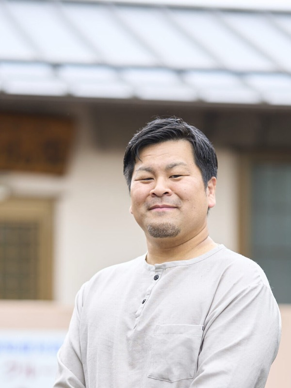
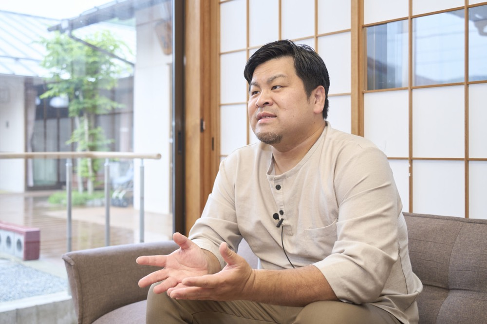
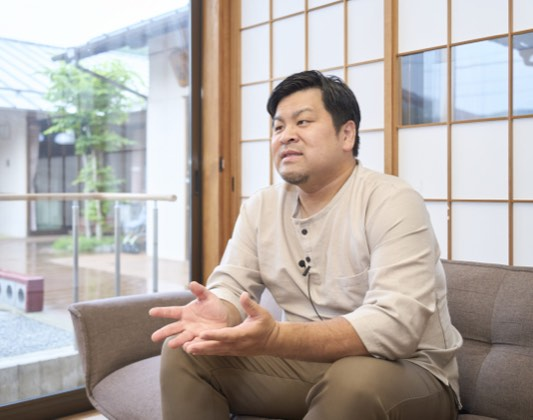
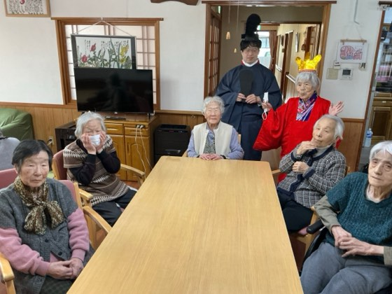
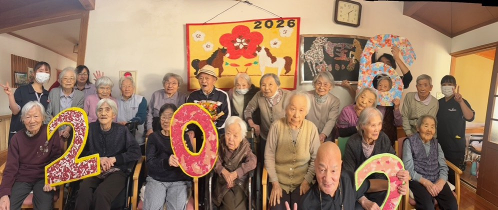
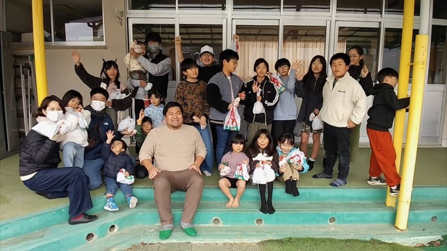
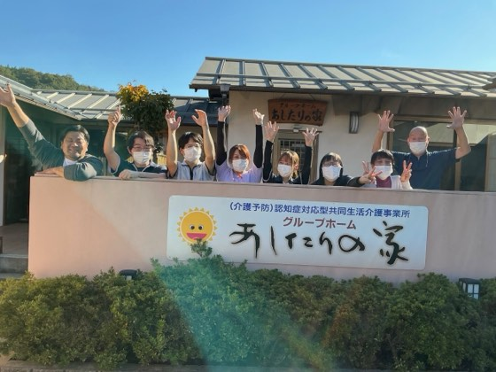
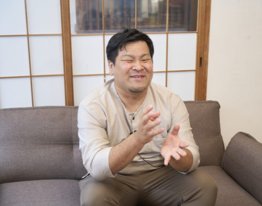
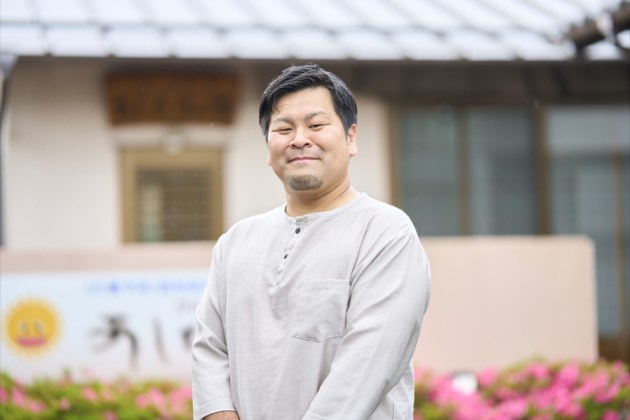
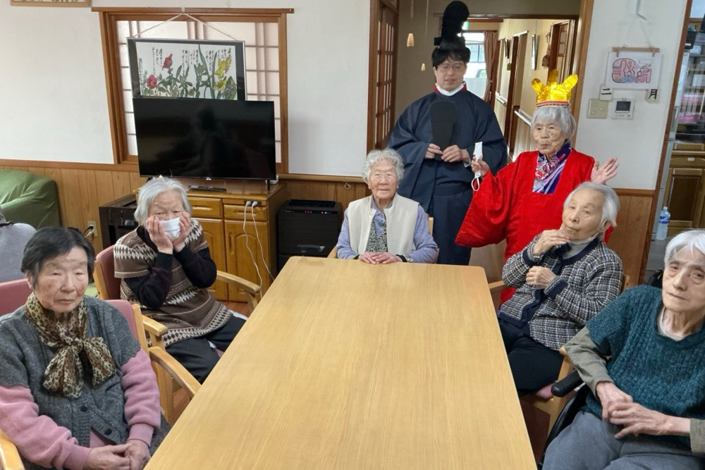

最期まで自分らしく 地域密着の介護事業
原弘樹hiroki hara
株式会社コステム 代表取締役
1987年生まれ、岡山県真庭市出身。介護福祉士や介護支援専門員などの資格を持ち、2019年に代表取締役に就任。認知症ケアに特化し「個人の人生」を常に考え、地域社会と連携した介護サービスを提供している。
企業サイトを見るCHAPTER 01
創業の想いと地域に根ざしたグループホーム

Qグループホームあしたりの家を設立された背景や当時の状況について教えてください。
Aあしたりの家は2001年に私の両親が立ち上げました。当時の介護事情は痴呆症(現在の認知症)を発症すると、住み慣れた地域を離れ、遠くの県南の施設に入所せざるを得ないケースが多く見受けられました。そんな現状に疑問を抱き、「最後まで住み慣れた場所や家で、その人らしく生活できる場所を作りたい」という強い思いから、この施設は生まれました。認知症になると、本人の意思を尊重したいと思っても、安全や家族やの希望とぶつかることがあります。「本人はどうしたいか」という問いに、明確な答えがない日も少なくありません。それでも私たちは、できないこと助ける支援ではなく、最期までその人らしさを守る方法を探し続けたい。人は認知症になっても病気になる前の人生が消えるわけではありません。喜びも、誇りも、愛した人への思いも、その人の中に確かに残っています。私たちの役割は介護をすることではなく「あなたはあなたのままでいい」と、その人の人生を支え続けることだと思っています。
Q幼少期に施設が設立されたとのことですが、その時の経験は現在の原社⻑の考え方にどう影響していますか?
A私が小学生の頃にあしたりの家ができ、両親が忙しかったため私もよく事業所で過ごしていました。当時はまだ「痴ほう症」と呼ばれていた方々と接する機会が多く、同じ質問を2時間も繰り返されたり、軍隊経験のある方に部下と勘違いされて怒られたりと、子どもながらに様々な体験をしました。今思えば、認知症を理解していない人にとっては恐怖すら感じる状況だったかもしれません。当時の私は、その言動の意味を十分に理解できていたわけではありません。認知症という言葉ばかりに目を向け、その人自身を見失ってしまうことへの違和感が、幼い頃から少しずつ芽生えていたように思います。
認知症という言葉だけが先行すると、その人がどんな人生を歩み、何を大切にし、どんな経験を重ねてきたのかという一人の人間としての姿を見失ってしまいがちです。だからこそ私は、何ができなくなったのかではなく、その人がどんな経験をしてきたのか、どんな思いで今を生きているのかを理解しようとすることが大切だと考えています。相手の視点に立ち、その人の世界を知ろうとする姿勢が、真の利用者理解に繋がると思います。幼少期に認知症の方々と日常を共にした経験が、今の私の介護観の原点になっています。
CHAPTER 02
「本人主体」のケアと多様性を活かすチーム
Q株式会社コステムの組織としての強みや、職員に対する考え方について教えてください。
A私たちの最大の強みは「人」と「専門性」です。10代からベテランまで幅広い年齢層の職員が在籍しており、それぞれの「強み」や「得意」を活かせる環境を整えています。組織全体で透明性のあるコミュニケーションを重視し、チームワークを大切にしています。また、職員には介護の専門性だけでなく、セルフマネジメントや働く意味を考える研修なども提供し、キャリアアップを支援しています。私が代表に就任してからは、介護職員の賃金向上と適切な評価基準の導入に着手しました。頑張った人がしっかりと報われる仕組みを作り、介護業界のネガティブなイメージを変えていきたいと考えています。
また近年では、ICT化とDX化を積極的に推進しています。これは単に業務を効率化するためではなく、介護という専門職が本来持つ専門性をより発揮し、利用者一人ひとりと向き合う時間を増やすための取り組みです。記録や情報共有などの専門職以外の業務を簡略化し、職員の負担軽減や思考整理の補助につなげることでより質の高いケアの実現を目指しています。その結果、職員の生産性向上だけでなく、有給休暇の取得促進にも繋がり、仕事と生活のバランスを保ちながら長く働き続ける環境づくりが進んでいます。介護の本質は、人が人を理解し、その人らしい人生を支えることです。ICTとDXは、その本質をより深く実践するための手段であり、私たちはこれからも人を中心に捉えた組織づくりを進めていきたいと考えています。







CHAPTER 03
地域と繋がる介護と新たな拠点の構築

Q現在注力している取り組みについて、特に地域との連携においてどのような活動を行っていますか?
A「介護保険外事業」「認知症特化」「地域との接点づくり」の3つに注力しています。特に「小規模多機能ゆったりあしたり」では、毎月「地域食堂」を開催しています。
これは単なる食事の提供ではなく、子どもから高齢者、障害者、地域住⺠が同じ空間で過ごすことで、相互理解を深め、顔の見える関係を築くための場です。今年で4年目となり、地域のボランティアや企業の方々の協力のもと、地域との交流の場となっています。
Q今後の展望として、どのような目標を掲げて会社を成⻑させていきたいとお考えですか?
A今後は、現在注力している3つのテーマを掛け合わせ、認知症の人と家族向けの総合支援事業(認知症予防カフェ、家族相談、介護教室など)を展開していきたいと考えています。介護保険事業の枠組みを超え、「困ったらあしたり」と地域の方から頼られる窓口になることが目標です。また、ACP(アドバンス・ケア・プランニング)支援や在宅での看取り支援、死後事務支援の連携を強化し、「最期まで地域で暮らす」ことを実現できる体制を充実させていきます。将来的には、単なる介護事業所ではなく、地域の様々な困りごとを解決できる総合的な「福祉拠点」となることを目指しています。